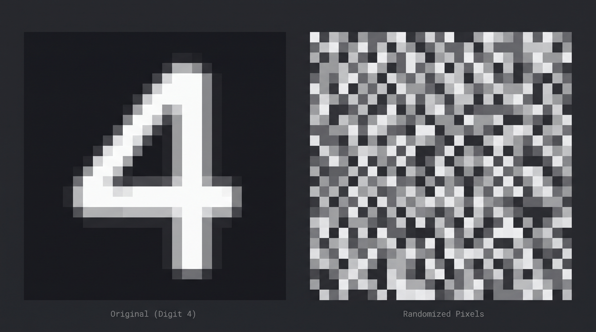
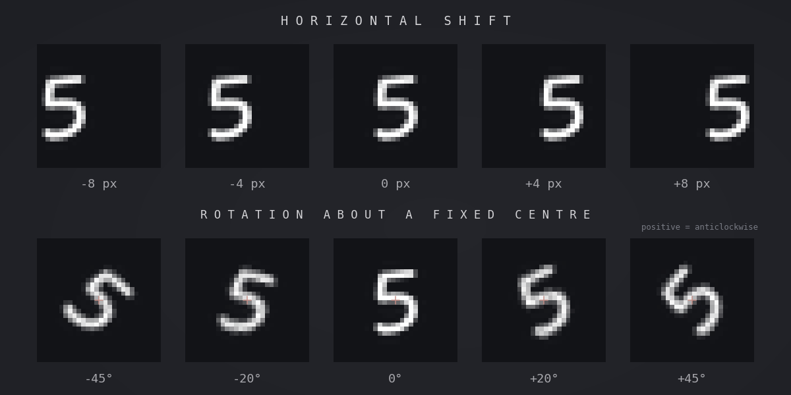

Introduction to learning features.
Move from fixed basis functions to functions learned from data.
What this note covers
- The motivation behind learning features
- The curse of dimensionality
- High level overview of learning features
Recap
In the previous two topics, we used basis functions to allow linear models to learn nonlinear relationships. For example, we used polynomial basis functions such as:
$$ \phi_1(x) = x, \quad \phi_2(x) = x^2, \quad \phi_3(x) = x^3 $$
Which resulted in this model:
$$ y(x, \mathbf{w}) = w_0 + w_1 \phi_1(x) + w_2 \phi_2(x) + w_3 \phi_3(x) $$
Similarly, for classification we can, using logistic regression, write:
$$ p(C_1 | x) = \sigma(w_0 + w_1 \phi_1(x) + w_2 \phi_2(x) + w_3 \phi_3(x)) $$
However, in both of these examples, the basis functions were chosen by us before we fitted the model. Which raises an interesting question: Why do we have to decide in advance which features are useful?
The problem with fixed features
Suppose we have two inputs,
$$ \mathbf{x} = \begin{bmatrix} x_1 \\ x_2 \end{bmatrix} $$
A second-order polynomial transformation might include:
$$ x_1, \quad x_2,\quad x_1^2,\quad x_2^2, \quad x_1x_2 $$
Which we can easily use to fit a linear model using these transformed features. But what happens if we have more than 2 inputs?
Let's generalise to $D$ inputs. A second-order polynomial transformation would include $\binom{D+2}{2}$ features. And in fact that relationship holds for higher-order polynomials too. In general, for a polynomial of degree $M$, the number of features (basis functions) is:
$$ \binom{D+M}{M} $$
Consider a model where we have 30 input features and a degree 5 polynomial. This produces $\binom{30+5}{5} = 324,632$ polynomial terms including the constant term. Although the model can learn a coefficient for each of these terms, many of these features may contribute very little to the prediction.
The difficulty is therefore not simply that we need more features. It is that we do not know which of these 324,632 features are actually useful.
How many polynomial terms?
The interactive plot requires JavaScript and Chart.js. The counts are described below.
The curse of dimensionality
The problem of having to construct large numbers of basis functions is not limited to polynomials. Let's consider another way of constructing basis functions.
Suppose that, instead of polynomial functions, we divide the input space into a grid of regions. We then define one basis function for each region: $$ \phi_j(\mathbf{x}) = \begin{cases} 1 & \text{if } \mathbf{x} \text{ is in region }j\ 0 & \text{otherwise}. \end{cases} $$ We can use these basis functions in exactly the same linear model as before: $$ y(\mathbf{x},\mathbf{w}) = w_0+\sum_{j=1}^{M}w_j\phi_j(\mathbf{x}). $$ Since each observation belongs to exactly one region, the model can learn a different prediction for each region.
For example, suppose we are predicting a person's spending habits using two input features: age and height. If we divide each input into 10 intervals, we obtain $$ 10 \times 10 = 100 $$ regions, and therefore 100 basis functions.
And this continues to grow polynomially as we add more input features. More generally, if we have $D$ input features, each of which is divided into $R$ regions, then the total number of regions in the input space is:
$$ R^D $$
Unlike the polynomial example, this grows exponentially with the number of input features.
Why is this a problem?
Each basis function is only active for observations in its corresponding region. Therefore, to learn a separate prediction for every region, we need training examples from every region.
Even observing a single example from each region would require at least $R^D$ examples, and typically many more because observations are not distributed perfectly evenly. Furthermore, a single observation in a region would provide little evidence about the correct prediction.
This illustrates one aspect of the curse of dimensionality: as the number of dimensions increases, certain approaches to representing or learning functions require exponentially more data.
Number of regions vs number of occupied regions
Two input dimensions
Adding input dimensions
24 observations · 100 regions in two dimensions
The interactive plots require JavaScript and Chart.js. With $R=10$, there are 100 regions in two dimensions and $10^8$ in eight.
Real data is usually structured
So far, all of our approaches have attempted to represent relationships across the entire input space, either by constructing combinations of inputs or by dividing the input space. However, real world data is rarely distributed uniformly across the input space.
Consider a 28x28 grayscale image of a handwritten digit. We can represent this image as a vector of 784 pixel values where each pixel value is between 0 and 255. The number of possible images is therefore $256^{784}$, which is an astronomically large number. However, the number of images that are actually valid handwritten digits is much smaller, and most of the possible images are not valid digits. Instead, realistic images tend to have structure: neighbouring pixels are related and digits are made up of recognisable strokes and shapes.
Random pixels and handwritten digits

Compare random pixel grids with handwritten digits to make the structure in real images visible.
If we take one of these images and shift it horizontally, the resulting image has different pixel values but the overall change can be represented by one quantity: the horizontal shift. Similarly, if we rotate the image, it can be represented by two quantities: the angle and centre of rotation.
This is an example of how a high-dimensional input space can be represented by a smaller number of underlying factors. E.g. projecting a higher dimensional input space onto a low-dimensional manifold.
Transforming digits

Show one digit shifted and rotated on fixed grids, with the shift and angle labelled.
Rather than the model focusing on every input feature, we want it to exploit the structure in the data and focus on features that are actually informative for the prediction task.
Learning the basis functions
In order to target the underlying structure in the data, we need to allow the model to learn the functions themselves. Instead of having:
$$ \phi_j(x)$$
where the basis function is fixed, we can define a basis function with learnable parameters $\theta$:$$ \phi_j(x, \theta_j)$$
For example, consider a Gaussian basis function:
$$ \phi_j(x; \mu_j, s_j) = \exp\left( -\frac{(x-\mu_j)^2}{2s_j^2} \right) $$
Here, both the parameters $\mu_j$ and $s_j$ are learnable. Where $\mu_j$ controls where the basis function is centered, and $s_j$ controls its width.
Move and reshape a Gaussian basis function
The interactive plot requires JavaScript and Chart.js. Changing μ moves the peak; increasing s broadens the curve.
Returning to our original regression model, we can now write:
$$ y(x, \mathbf{w}, \theta) = w_0 + \sum_{j=1}^{M} w_j \phi_j(x, \theta_j) $$
where the output $y$ is now a function of both the weights of the functions $\mathbf{w}$ and the learnable parameters $\theta$ that control the behaviour of the functions themselves .
This is the central idea behind neural networks: rather than relying on hand-crafted features, we can learn useful representations of the input space directly from the data.
In the next note, we will dive into the mathematics of single and multilayer neural networks.